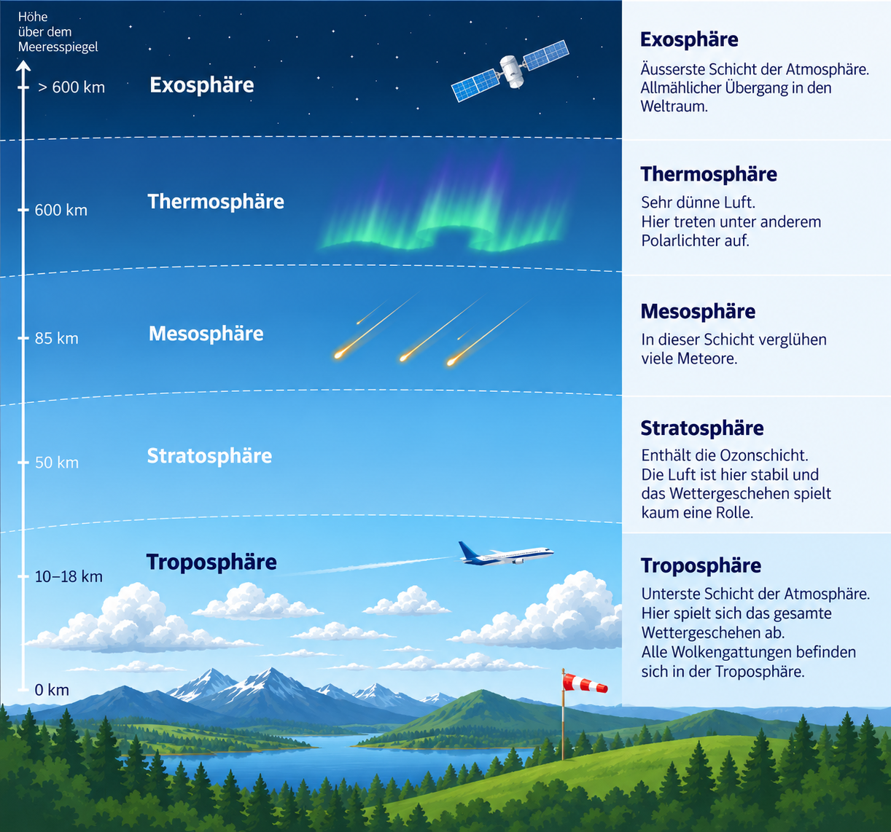

GRUNDLAGEN

Wichtig
Die in diesem Lernmodul behandelten Wolkengattungen entstehen in der Troposhpäre, der untersten Schicht der Atmosphäre.
Einordnung
Die Troposphäre reicht je nach Breitenlage ungefähr 10 - 18 km hoch. Hier spielt sich das Wettergeschehen ab.
Die Atmosphäre der Erde
☰
☁
‹
›
⌂